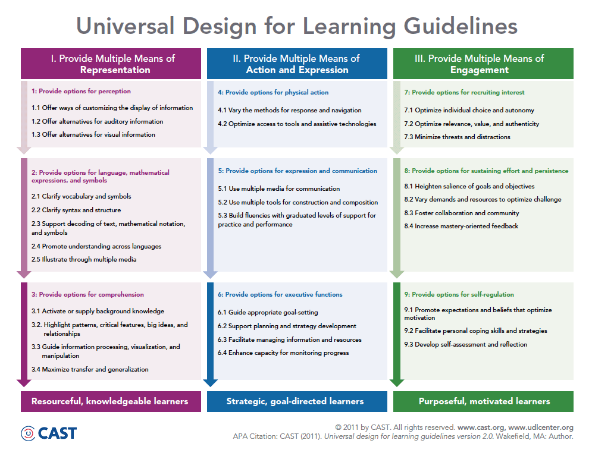
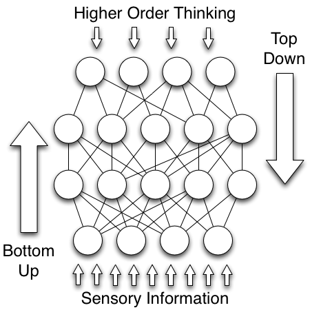

Abstract
Video games are media-rich tools that make learning more accessible for individuals with cognitive disabilities.
Overview
Video games and video game play make learning more accessible by1:- Presenting information in a variety of ways
- Providing several ways to plan and perform tasks
- And by motivating and engaging players
Naturally Designed for Universal Learning
Games and play are naturally designed for learners of any age, ethnicity, or intelligence. Games contain goals, rules, challenges, feedback, voluntary participation, and result in a quantifiable outcome3,4,5. Video games are a complex form of digital media that incorporates these gamic properties, and as a media-rich tool, video games provide equal opportunities for players to train and develop mental abilities. Video games present information in a number of ways:- Visual and auditory cues
- Repeatable experiences
- Logs and menus
- Short-term objectives and long-term goals
- Stories and adventures
- Real-time action vs. turn-based strategy
- Scalable difficulty
- Individual and multiplayer game play
- Competition and cooperation
- And in other various ways

Figure 1: The Universal Design for Learning
Guidelines depict three main principles: Respresentation, Action, and
Engagement.
Cognition
Cognition is defined as the mental processes associated with memory, language, perception, attention, problem solving, decision-making, and reasoning11. Cognition develops through bottom-up and top-down processes (Figure 2). The bottom-up process is input and data driven, which involves perceiving the world, remembering features and characteristics about it, and navigating the environment. The top-down process applies previously learned knowledge to affect perception, memory, problem solving, decision-making, and the like11. Video game play challenges these processes and drives cognitive development. Through a cyclical flow of bottom-up and top-down processing, a player perceives and interacts with the video game environment--processing bottom-up--and in order to succeed in the game, s/he must solve problems and use several cognitive skills to overcome obstacles and challenges--processing top-down.
Figure 2: Sensory information activates
neurons (bottom circles) that 'talk' to more neurons. Information is
stored between these connections. Thinking (top circles) activates and
controls that information.
According to the CHC theory of cognitive abilities, human cognition exists on three levels or stratum12,13. The largest, most encompassing level is the General stratum, or g, which represents a person's general intelligence. The next level down is the Broad stratum, which includes 9+ clusters of cognitive abilities. The lowest level is the Narrow stratum, which includes 70+ cognitive abilities. Different theories and psychometeric tests identify Broad and Narrow abilities differently7,14,15,16. Following the Woodcock-Johnson III - Tests of Cognitive Abilities, there are 7 Broad clusters and a number of Narrow abilities that can be tested and analyzed. They include15,16:
- Crystallized Intelligence or Comprehension-Knowledge (Gc): the breadth and depth of one's acquired knowledge; how well one reasons and communicates that knowledge
- Declarative knowledge
- Factual information
- Comprehension
- Rules
- Procedural knowledge
- Operational skills
- Fluid Reasoning (Gf): the ability to reason, form concepts, and solve problems using novel information and procedures
- Inductive reasoning
- Deductive reasoning
- Identifying relationships
- Drawing inferences
- Short-Term Memory (Gsm): the ability to perceive and hold information in immediate awarness and use it within a few seconds
- Memory span
- Working memory
- Long-Term Retrieval (Glm): the ability to store information as well as retrieve and use that information while thinking
- Associative memory
- Meaningful memory
- Associative fluency
- Naming facility
- Visual-Spatial Thinking or Visual Processing (Gv): the ability to perceive, analyze, synthesize, and discriminate visual patterns as well as store and recall visual representations
- Mentally manipulate objects and patterns
- Identify obscure or vague representations
- Visual memory
- Auditory Processing (Ga): the ability to analyze, synthesize, and discriminate auditory stimuli as well as discern speech sounds
- Discriminate speech sounds
- Discriminate tones
- Temporally track auditory events
- Processing Speed (Gs): the ability to perform automatic cognitive tasks (for ~2-3 minutes) while sustaining focused attention
- Perceptual speed
- Rate-of-test-taking
- Associative fluency
- Naming facility
By nature and by nurture, some individuals possess limited or severely limited cognitive abilities. A number of neurological and behavior factors contribute to clinical conditions such as attention deficit disorder (ADD), severe clinical conditions like traumatic brain injury (TBI), and functional disabilities that deal with specific cognitive domains such as memory deficits1. These individuals are mentally limited in specific ways, and their treatment typically ranges from pharmalogical medication to behavioral therapy. By affecting both physical and psychological processes, video games and video game play act as a form of prevention and treatment for cognitive growth. Multiple observations report cognitive and physical changes from video game play9,17,18,19,20,21,22,23,24,25, and supports the idea that video games train and develop cognitive abilities, and video game play provides a treatment as well as prevention option to cognitive disabilities. As researchers and designers learn how video game elements and architectures train Broad and Narrow cognitive abilities, individuals with cognitive disabilities will be able to receive treatment through video game play.
Immunis - a Holistic Game
I purpose that we can study the affect of video game play on cognitive domains, and through extensive research, we can design video game systems to accommodate cognitive needs at an individual level. In order to do that, I will investigate and experiment with a holistic game: Immunis. Immunis is a strategy game where in a player experiences and directs an immune response. The player controls several leukocytes, i.e. white blood cells with unique abilities, and defends the body from an infection. This is a video of Immunis:
Video 1: Immunis 0.0 Stage 1
As a holistic game, Immunis will:
- Provide educational value and pedagogical support for immunology specific information
- Help prevent illnesses, e.g. lung cancer, by making the player cognizant of how these illnesses arise as well as the damage they cause
- Assess cognitive growth and development
References:
- About UDL. (n.d.). In CAST. Retrieved from http://www.cast.org/udl/
- Cognitive Disabilities. (2013). In WebAIM. Retrieved from http://webaim.org/articles/cognitive/
- Game. (n.d.). In Oxford Dictionaries. Retrieved from http://oxforddictionaries.com/definition/english/game?q=game
- McGonigal, J. (2011). Reality is broken: Why games make us better and how they can change the world. New York, NY: The Penguin Group.
- Salen, K., & Zimmerman, E. (2004). Rules of play: Game design fundamentals. Cambridge, MA: The MIT Press.
- Ericsson, K., Krampe, R., & Tesch-Romer, C. (1993). The role of deliberate practice in the acquisition of expert performance. Psychological Review, 100(3), 363-406.
- Dignan, A. (2011). Game frame: Using games as a strategy for success. New York, NY: FREE PRESS.
- Gazzaniga, M., Ivry, R., & Mangun, G. (2009). Cognitive neuroscience: The biology of the mind. New York, NY: W. W. Norton & Company, Inc.
- Kalat, J. (2013). Biological Psychology (11th ed.). Belmont, CA: Wadsworth Cengage Learning.
- Linden, D. (2011). The compass of pleasure: How our brains make fatty foods, orgasm, exercise, marijuana, generosity, vodka, learning, and gambling feel so good. New York, NY: the Penguin Group.
- Goldstein, E. (2011). Cognitive psychology: Connecting mind, research, and everyday experience. Belmont, CA: Wadsworth, Cengage Learning.
- Cattel-Horn-Carroll theory. (n.d.). In Wikipedia: The free encyclopedia. Retrieved from http://en.wikipedia.org/wiki/Cattell-Horn-Carroll_theory
- Three stratum theory. (n.d.). In Wikipedia: The free encyclopedia. Retrieved from http://en.wikipedia.org/wiki/Three_Stratum_Theory
- Carrol, J. B. (1993). Human cognitive abilities: A survey of factor-analytic studies. New York, NY: Cambridge University Press.
- Mather, N. & Woodcock, R. W. (2001). Woodcock-Johnson III: Tests of cognitive abilities. Itasca, IL: The Riverside Publishing Company.
- McGrew, K. (2009). Cattell-Horn-Carroll (CHC) Broad and Narrow Cognitive Ability Definitions. Retreived from http://www.ibapnet.org.br/congresso2009/material/chcdefs.pdf
- Aart, J., Klaver, E., Bartneck, C., Feijs, L., & Petters, P. (2007). Neurofeedback gaming for wellbeing. Proceedings of the International Conference on Advances in Computer Entertainment Technology: Brainplay 2007 Playing with Your Brain-Computer Interfaces and Games Workshop at Advances in Computer Entertainment. Retrieved from http://www.tue.nl/en/publication/ep/p/d/ep-uid/211045/?no_cache=1
- Aart et al. report a number of problems that video game neurofeedback can be applied to as medication. These include: alleviating attention and hyperactivity disorders, muscular tonicity recovery for cardiovascular patients, relaxation and mediation to cope with mental stress, and improvements in weight loss and overall fitness.
- Astle, A., Webb, B., & McGraw, P. (2011). Can perceptual learning be used to treat amblyopia beyond the critical period of visual development? Ophthalmic & Physiological Optics, 31(6), 564-573. doi: 10.1111/j.1475-1313.2011.00873.x
- Video games provide an effective treatment option to patients with amblyopia, aka lazy eye. Amblyopia is a visual problem that results in reduced vision during early development, and it uses a process--perceptual--learning to help correct neurological problems. Perceptual learning is the "permanent and consistent improvements in performance on sensory tasks as a result of experience or practice, and this parallels video game play.
- Boyan A., Sherry, J. (2011). The challenge in creating games for education: Aligning mental models with game models. Child Development Perspectives, 5(2), 82-87.
- Croisile, B., Miner, D., Belier, S., Noir, M., & Tarpin-Bernard, F. (2007). Online cognitive training improves cognitive performance. Retrieved from http://www.happy-neuron.com/rsc/hn_vital/docs/French%20Geratrics%20Journal%20-%20Dr.%20B%20Croisile%20Publication.pdf
- Erickson, K., Boot, W., Basak, C., Neider, M., Prakash, R., Voss, M., … Kramer, A. (2010). Striatal volume predicts level of video game skill acquisition. Cerebral Cortex, 20(11), 2522-2530. doi: 10.1093/cercor/bhp293
- Erickson et al. found a connection between striatal volume, video game play acquisition, and video game improvement. The striatum relays information from the cortex to the basal ganglia, which plays a role in the initiation of actions as well as shifting between actions that offer the greatest reward. After playing a video game, Space Fortress, for several weeks, two groups were measured, and they showed larger striatal volumes after playing the video game. Space Fortress.
- Green, C. S., & Bavelier, D. (2012). Learning, attentional control, and action video games. Current Biology, 22: 197-206. doi: 10.1016/j.cub.2012.02.012
- Green, C. S., & Bavelier, D. (2006). The cognitive neuroscience of video games. In P. Messaris & L. Humphreys (Eds). Digital Media: Transformations in Human Communication. New York: Peter Lang. Retrieved from http://vision.psych.umn.edu/users/csgreen/Publications/publications.html
- Green, C. S., & Bavelier, D. (2003). Action video game modifies visual selective attention. Letters to Nature, 423, 534-537. Retrieved from www.dtso.org/jclub/20030825/Green_03.pdf
- Green and Bavelier conducted five experiments: four demonstrated greater improvements in different aspects of visual attention, i.e. the rapid and accurate processing of visual information, in habitual video game players compared to non-video game players, and the fifth experiment, which tested only non-video game players, revealed attentional improvement over time through video game play. In all four instances, video game players out performed non-video game players.
- Saposnik, G., & Levin, M. (2011). Virtual reality in stroke rehabilitation : A meta- analysis and implications for clinicians. Stroke, 1380-1385. doi: 10.1161/STROKEAHA.110.605451
- Staiano, A., & Calvert, S. (2011). Exergames for physical education courses: Physical, social, and cognitive benefits. Child Development Perspectives, 5, 93-98.
- Staiano and Calvert reveal that physically intense video games like exergames, e.g. Dance Dance Revolution and Wii Sports, are being used as health tools to increase caloric expenditure and heart rate. Also, using video games as a form of aerobic exercise affects the structure and function of the brain in a number of ways: It increases cerebral circulation via enhanced cardiorespiratory functioning, and it also decreases the risk of disease by providing an enriched environment of increased neurotransmitters, enhanced physiological and neurological mechanisms, and healthy molecular and neurochemical changes. Collectively, these changes can lead to improved physical and cognitive performance, social interaction, and academic performance.
5/8/14